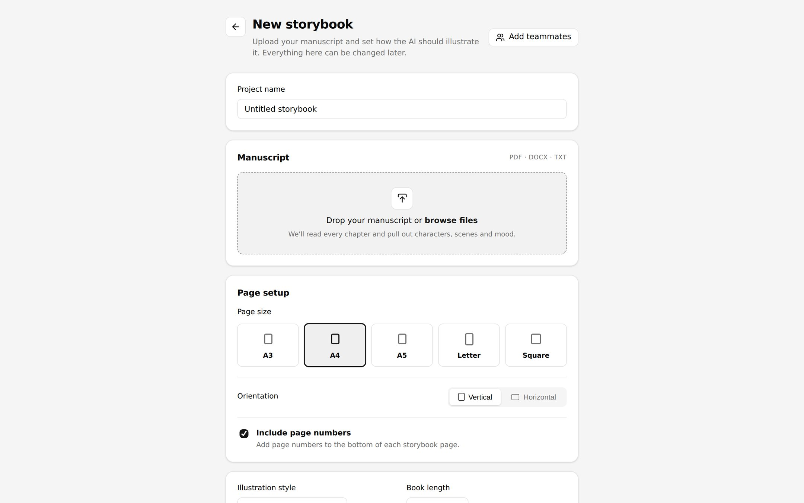
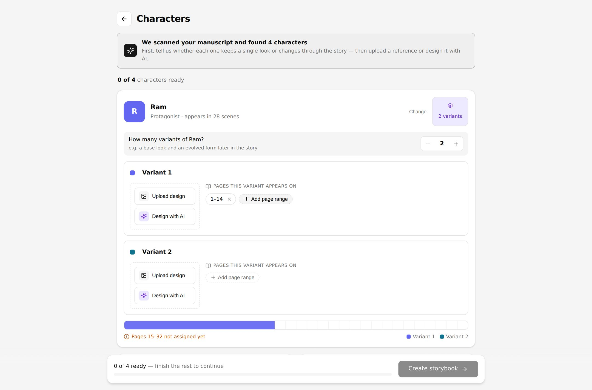
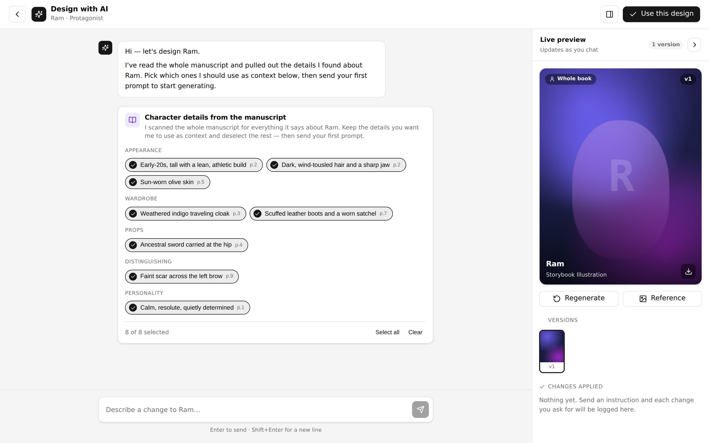
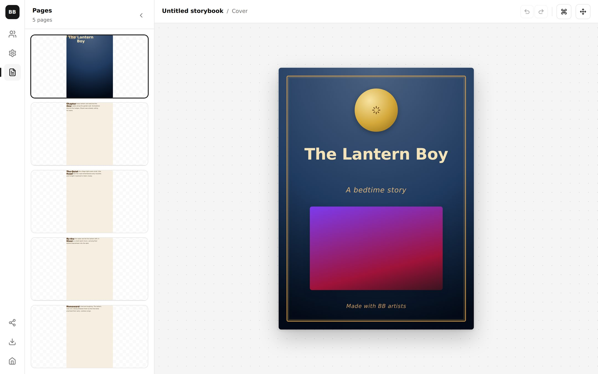
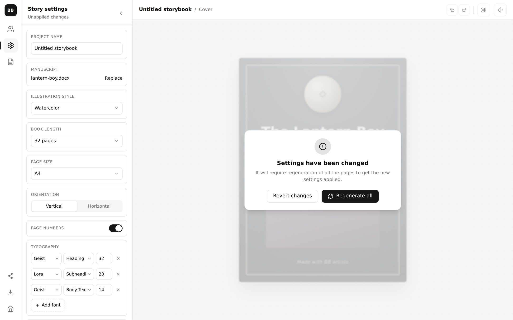

Case study · 2026 · Service design & product design
Blue Balloon — a manuscript in, an illustrated book out
In brief
A children's book publisher asked for a product that could take a
manuscript and return the finished, illustrated book — the
job an illustrator does across thirty-two pages. The interesting
part is what stood in the way: no single image model could produce
a usable page, a page has to leave room for words without going
blank, and a character who evolves halfway through the story breaks
every consistency trick there is. This is the system that answers
those three, and the interface that hands the control back to a
person.
ClientChildren's book publisher
Target userIn-house editorial & production teams
RoleService design, product design & prototype
Scale designed for16–64 page books · multi-variant casts
01 — The brief
Replace the illustrator — the whole job, not a step of it
The ask was blunt and worth stating in the client's own terms: the
brand wanted a product that replaces their illustrators. They
publish children's books. They have manuscripts. They wanted to hand
over a manuscript plus the specifics — style, page count, trim,
palette, typography — and get the entire book back, generated.
That framing matters, because it rules out the easy version of this
product. A tool that makes a nice picture is not the job. The job is
thirty-two pages that belong to each other: the same child on page 4
and page 27, a composition on every spread that a paragraph can sit
on without covering the story, and a book that can be re-cut when the
art director changes their mind about the style.
How might we
turn a manuscript into a whole illustrated book — consistent in
character, composed for text, and controllable by a person who is not
an AI engineer?
02 — No single model could do it
The generation is not a model — it is a relay
The first finding killed the obvious architecture. I could not find a
single AI tool that produced a correct page on its own. Each one was
good at part of it and reliably bad at the rest — one could
reason about the scene but not draw it, one drew beautifully but
ignored the composition constraint, one held a character's face but
lost the wardrobe, one followed instructions literally and produced
something lifeless.
So the system became AI orchestration: Grok, Gemini, Kimi and
several others working in sequence on the same page, each doing the
part it is actually good at and handing on a result the next one is
constrained by. What the user experiences as “generate” is
a relay, and the design work was deciding what each leg is
responsible for and what it is not allowed to change.
Read, then draw
Understanding the manuscript — who is in this scene, what is happening, what the mood is — is a language problem, not an image one. It is settled in text before any pixel exists, so the image models are handed a brief rather than a paragraph of prose.
Compose, then render
Where the subject sits and how much of the frame it is allowed to occupy is decided before rendering. Asking an image model to both invent a scene and obey a spatial budget is where every single-tool attempt fell apart.
Every leg is constrained by the last
Character reference, palette, style and composition are carried forward as hard inputs rather than re-described in prose. Each model gets less freedom than the one before it, which is what makes thirty-two pages look like one book.
The user never meets the relay
None of this surfaces. There is no model picker, no step list, no temperature. The interface asks about the story and the art direction; which engine drew what is an implementation detail the publisher should never have to hold.
That gets a page drawn. The harder half is deciding whether the page
that came back is any good — which is the next section.
03 — Supervision
The model that drew it does not get to mark it
Orchestration gets a picture made. It does not get a picture that is
correct, and a children's book has a very low tolerance for
incorrect. A spread cannot ship with six fingers on one hand. The
coat cannot change colour between page 11 and page 12. A scene the
manuscript calls a garden cannot arrive as a forest.
Those are three unrelated failures, and the thing that does not catch
them is asking one model is this good? — least of all the
model that just made it. So the second half of the system is a
supervision tree: the generator produces a candidate, a supervisor
fans it out to narrow critics that each answer one question they
can actually answer, and a single arbitrator turns their verdicts
into the one decision the page needs.
Generation on the spine, judgement in the branches, one decision at
the bottom. The dashed return is the only path that loops — and
it loops into QA, not into the finished book.
Six critics rather than one grader, because “rate this
image” returns mush and six narrow questions return
verdicts. Each lane is asked something specific enough to be
answered yes or no, with a reason:
Round one — is it the right picture?
Character QAGemini
Is this the same character as the reference assigned to this page range — face, build, wardrobe, the props they carry? The variant system from section 05 decides which reference is correct here; this lane decides whether the render honoured it.
Scene QAGPT-5.6
Does the image show what the manuscript says happens on this page — the place, the action, the time of day, who is present? A beautiful illustration of the wrong moment is still a defect.
Style QAGemini · GPT
Is it in the book's illustration style and palette, at the same rendering weight as the spreads either side of it? This is the lane that stops a thirty-two page book from looking like four books.
Round two — is it safe to print?
Anatomyvision · CV
Hands, limb counts, faces, the number of legs on the dog. The failure every reader spots instantly and no generator reliably avoids — so it gets a dedicated check rather than a clause in a longer prompt.
ContinuityGPT-5.6
Does this page agree with the pages already approved? Season, weather, time of day, which shoulder the satchel is on. Consistency is a property of the book, so it can only be judged against the book.
Safetysafety model
It is a children's book. This lane is non-negotiable and it can fail a page on its own — no arbitration, no weighing against the other five. The only veto in the system.
Someone has to decide
Six critics will disagree — style says yes, continuity says no, anatomy is unsure. A page cannot be 70% approved, so one arbitrator reads every verdict and returns a single answer. Without it the lanes deadlock, or worse, each starts fixing the page in a different direction.
Repair is targeted, not re-rolled
The important word in the diagram. A failed page is not thrown away and generated again — only the failing dimension is re-rendered, with everything that passed pinned in place. Re-rolling the whole page is how you lose a character you had already got right.
The loop returns to QA
A repaired page re-enters the tree rather than the output. It is an obvious rule that is easy to skip for speed, and skipping it means the second attempt is the one that ships unexamined — which is precisely the attempt nobody looked at.
The arbitrator holds the budget
It also owns the attempt ceiling. Eight model calls per page across thirty-two pages is already a real bill; a repair loop with no ceiling is an unbounded one. Past the limit the page is escalated to a person rather than retried forever.
On the roster. The model names above are the assignment at
the time of building, and they are the part of this diagram most
likely to be wrong first — the lanes get reassigned whenever a
better model appears for that specific question. The architecture is
the durable bit: separate the maker from the judge, decompose
judgement by failure mode, arbitrate once, and repair narrowly.
04 — A page has to hold words
Two thirds of the page is scene you can write on
A picture-book page is not a picture. It is a picture with a paragraph
on it, and generated art fails at this in a very specific way: it
fills the frame edge to edge with equally interesting detail, and
there is nowhere left to put the words. Drop text on it anyway and you
cover the story.
The rule I settled on is a spatial budget, and the second half of it
is the part that took the longest to get right:
33%The focus. Roughly a third of the page carries the subject and the action — the thing the page is about, at full detail and full contrast.
66%Scene, not blank. At least two thirds is negative space — but negative in the compositional sense, not the empty one. It is still sky, water, wall, field, dusk. It continues the scene, and it is deliberately generated to be low-detail and even in value, so a paragraph can sit on it and still be read.
TextPlacement follows the picture. Because the composition is decided before the render, the system already knows where the focus is not. The text block is placed into that region rather than dropped on top and hoped for — the words never sit over the thing the page exists to show.
Getting a model to leave two thirds of a frame calm without leaving it
white is not a prompt. It is the constraint that most justified the
relay in the first place: composition is planned as geometry, and the
renderer is handed that geometry rather than asked to invent it.
05 — The character problem
Same child on page 4 and page 27 — unless the story says otherwise
Consistency is the thing readers notice instantly and the thing
generative models are worst at. But “keep the character the
same” turned out to be the wrong requirement, because stories do
not work that way. Once I started listing real manuscripts, the
permutations fell out:
01One look, all the way through. The simple case, and the only one most tools handle. One reference is enough.
02Changes once, and stays changed. The character transforms partway in — grows up, gets injured, becomes something else — and the new look holds to the end.
03Changes, then changes back. Transformed for a stretch in the middle, then restored. The same look appears in two non-adjacent parts of the book.
04Evolves repeatedly. Several distinct forms across one story — the Pokémon case. Each stage is its own design, and each owns a stretch of pages.
One reference image cannot express any of that. So the character
stopped being an image and became a set of variants with page
ownership. You declare how many looks a character has, design each
one — upload it, or build it by chatting with the AI — and
then assign each variant the exact pages it appears on. Pages
1–14 are the boy; 15–32 are what he becomes.
Non-contiguous ranges are fine, which is what makes the changes-back
case work at all.
Because coverage is now a property you can compute, the interface can
be honest about it: a timeline under the variants shows which pages
are claimed, says Pages 15–32 not assigned yet while a gap
exists, and flags any page two variants both claim. A character is not
Ready until every variant has both a design and at least one
page range — and the book cannot be created until every character
is ready. The permutations stop being a modelling problem and become a
form the editor fills in.
06 — Key design decisions
Where the control had to sit
The service design settled what the system does. These four settled
what the person does — which is the difference between a
generator and a tool a publisher will actually put a book through.
Ask the character question first
“Does Ram look the same through the whole book?” is asked before anything is designed, because the answer changes what the editor is being asked to make — one reference, or several with page ranges. Getting this wrong late means re-generating the book.
The manuscript is the brief, and it is editable
The system scans the manuscript and offers what it found about each character — appearance, wardrobe, props, distinguishing marks, personality — each detail tagged with the page it came from. The editor keeps the ones that should drive the design and deselects the rest, so the AI's reading is a proposal, not a verdict.
Changing a character re-cuts the book
Edit a character or a story setting and every page is marked out of date, greyed out, and the canvas locks behind Regenerate all or Revert changes. It would be friendlier to patch one page. It would also be a lie — consistency is a property of the whole book, so the cost of breaking it is shown honestly.
Metadata must not trigger a re-cut
Adding a teammate changes nothing about the art, so it is explicitly excluded from what marks the book stale. A regeneration warning that fires for the wrong reasons gets ignored within a week, and then it is not a warning at all.
07 — The product
Five screens, and one of them is the idea
The interface is deliberately unremarkable, because everything hard
about this product is behind it. You open a project, describe the
book, settle the cast, and then you are in a workspace with the pages
down the left. The plates below are the real build, in the order you
meet them.
01 — Project board. One card per book, describing it the way a
production team does: page count, illustration style, status,
progress, who is on it, when it was last touched.

02 — New storybook. The manuscript goes in and everything the
art direction needs comes with it: page size and orientation,
illustration style, book length, the type ramp by role, and a
palette with a switch for whether the AI must obey it strictly or
may treat it as a starting point.

03 — Characters, and the component the whole case study is
about. Ram has two variants; each owns a set of page ranges; the
timeline underneath shows the coverage and says plainly that pages
15–32 are still unclaimed. Nothing can be created until every
character is complete.

04 — Design with AI. For anyone who has no reference to
upload. The manuscript details are offered as toggleable chips with
their page numbers attached, so the editor decides what counts as
canon before the first prompt; every generation is kept as a
version, and every instruction that landed is logged.

05 — The workspace. Pages down the left, the live page on the
canvas, and direct manipulation on top of the generated result:
move, restack, recolour, or ask for the change in words. The
composition budget is visible in the thumbnails — every inner
page keeps a calm column for its paragraph.

06 — The honest consequence. Change the illustration style, or
any character, and the book greys out: it will require
regeneration of all the pages to get the new settings applied.
Revert, or re-cut the whole thing. There is no third option, because
there is no third option in reality.
08 — The build
The workspace, running
The front end itself, embedded. Start on the project board, open
New Project, and walk the flow the way an editor would: drop in
a manuscript, set the style and length, then go to Characters and tell
it that Ram has variants. Add two, give the first pages
1–14, and watch the coverage timeline tell you what you have not
finished.
Then open a project into the workspace and change the illustration
style in Story settings. That is the moment worth having an opinion
about — whether locking the whole book is the right price for a
book that stays consistent.
Blue Balloon workspaceProject board, book setup, character variants, the AI studio and the page canvas.
Runs entirely in your browser against fixture data; nothing here talks to a server.Built for a desktop viewport — open it full screen on a phone.
09 — Impact & takeaway
What the shape comes down to
The brief was “replace the illustrator”. What the work
actually produced was a division of labour: the models draw, and the
system holds the three things an illustrator holds without being asked
— the same character across a whole book, a composition that
leaves room for the words, and one visual language from cover to
cover. None of those is an image-generation problem. All three are
design problems that had to be solved before generation was worth
doing at all.
4+
Models in the relay, invisible to the user
66/33
Scene-you-can-write-on to focus, per page
6
Variants a single character can hold
1
Character change re-cuts the whole book
The lesson I would carry forward is the character one. The obvious
requirement — keep the character consistent — was
wrong, and building to it would have shipped a product that fails on
any story where somebody grows up, transforms, or turns back. The
right requirement was let the story say where each look
belongs, and once that was the model, four messy permutations
collapsed into one page-range control an editor can fill in without
being taught anything.
About what's shown here. The client and the manuscripts are
anonymised, and the sample books, characters and teammates in the
embedded build are invented. The build is a front-end prototype:
the flow, the variant and page-range system, the staleness rules and
the page canvas are all real and operable, but the illustrations it
shows are placeholders rather than live generations — the
orchestration and supervision described in sections 02 and 03 run
behind the product, not
inside this page. Still open: whether the whole-book
regeneration lock survives contact with a deadline. It is the honest
behaviour and the one most likely to be argued with, and the test I
want to run is what an editor does at 6pm the day before a print
date when one character is wrong on one spread.